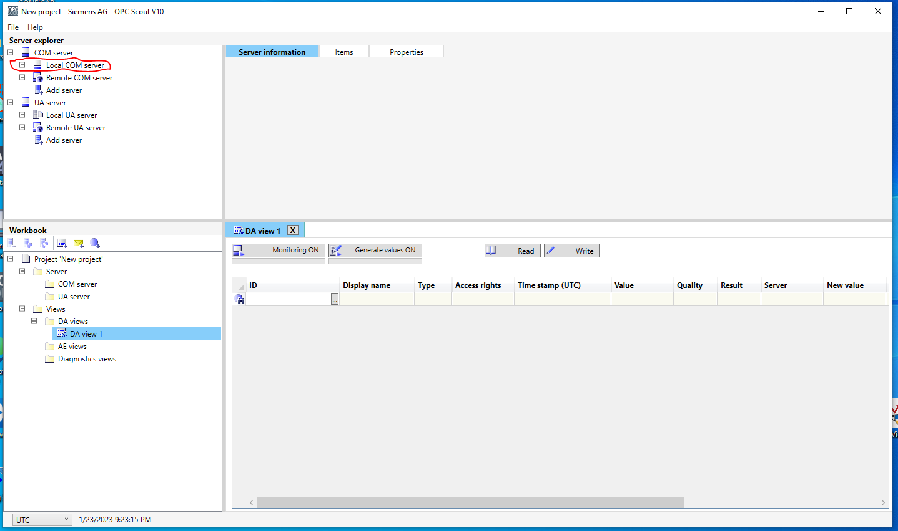
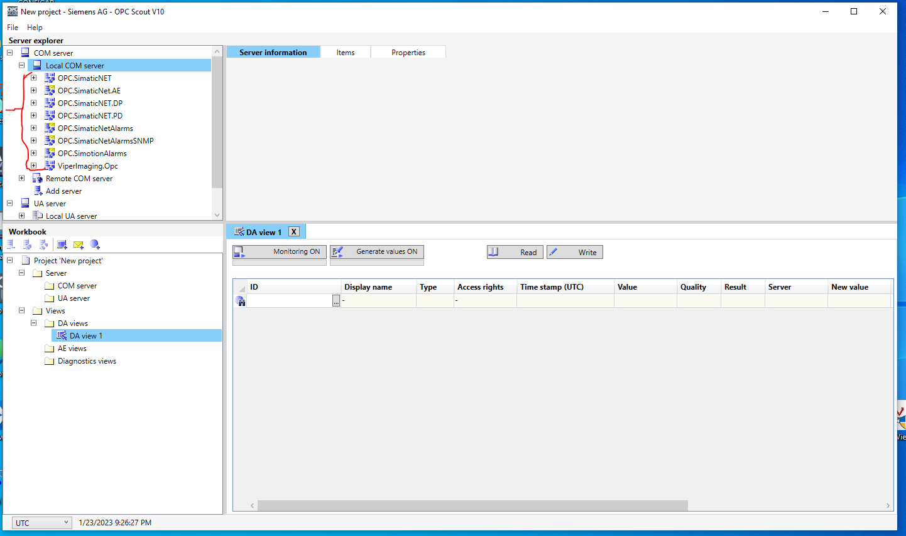
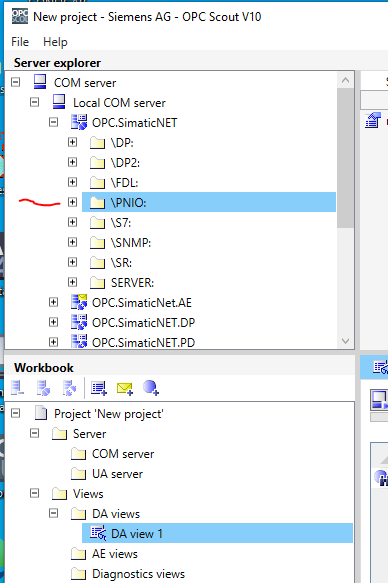
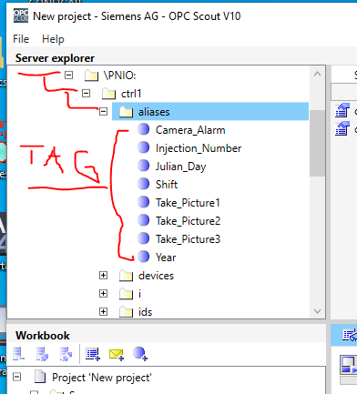

When you first open OPC Scout, located in the "Server Explorer" section you should see a list of "COM" servers and a list of "UA" servers. In the "COM" server section you will need to expand the "Local COM server" option.
After expanding the "Local COM server" menu, a list of local OPC/COM servers should appear if the servers are currently running.
From that list we are using two servers. Those are as follows:
Using OPC Scout we can test communication of these servers via Siemens Mechanisms. First we will start by expanding the "OPC.SimaticNET" server menu and finding the directory labeled "\PNIO:".
Once the "\PNIO:" directory is found expand it. Then expand the "ctrl1" directory and then the "aliases" directory.
From here you will notice a list of tags that have been aliased to familiar names. We are now going to set up a "DA view" for testing and viewing the results.
In the "Result" section of the "DA view" project you should get an "OK" result for good signals or if there was a problem the result would be a "FAIL". You can drag down as many of the aliased tags as you like and try them all at once. Try following these steps with both the "OPC.SimaticNET" server and the "ViperImaging.OPC" server.